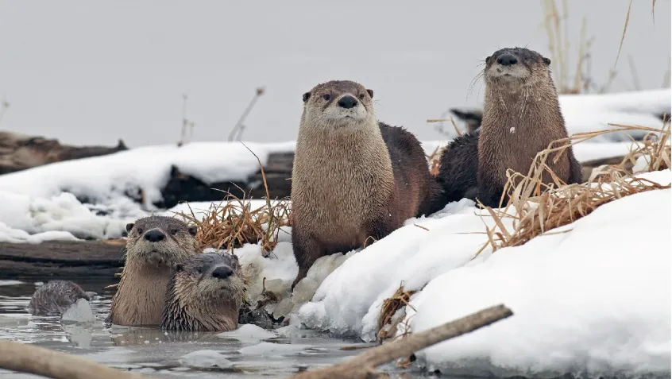
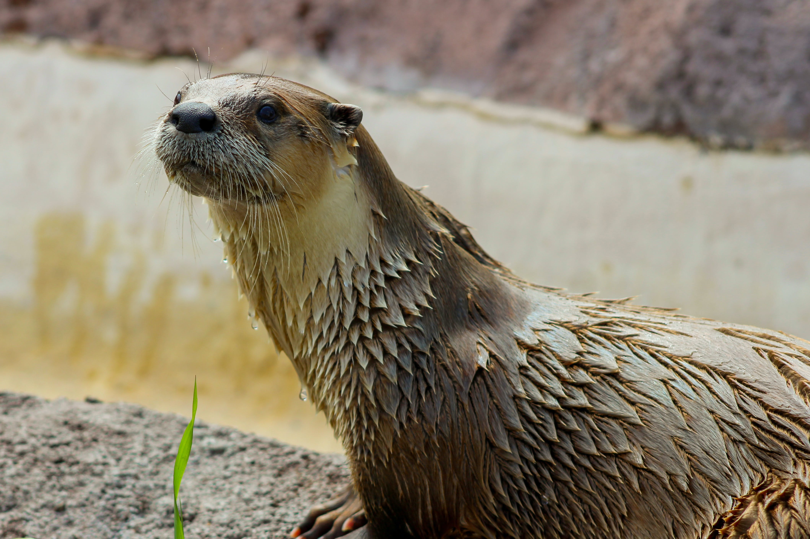
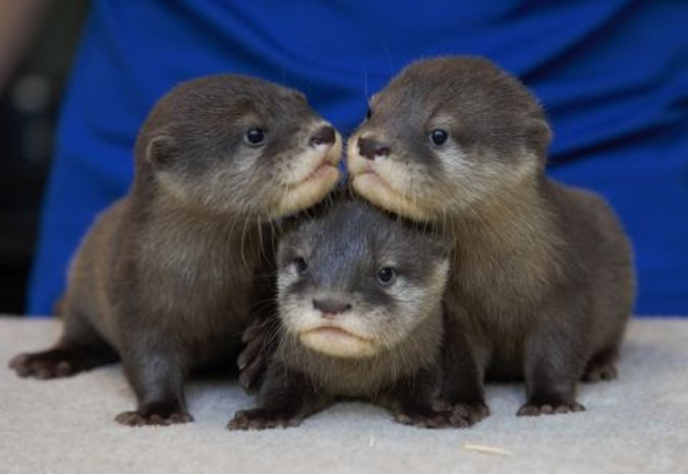
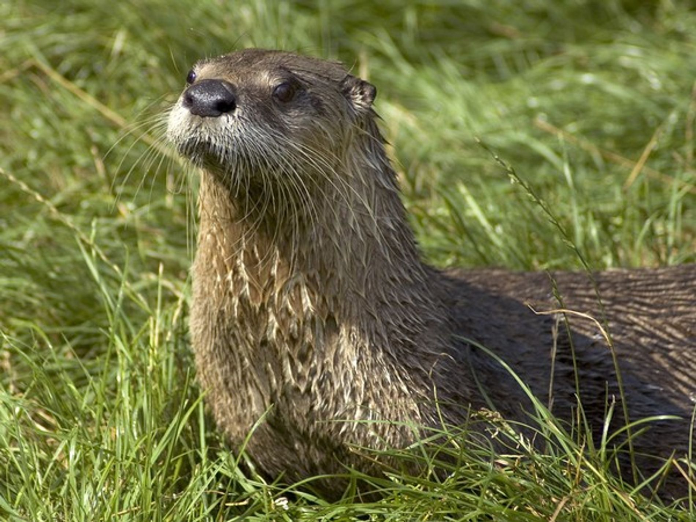
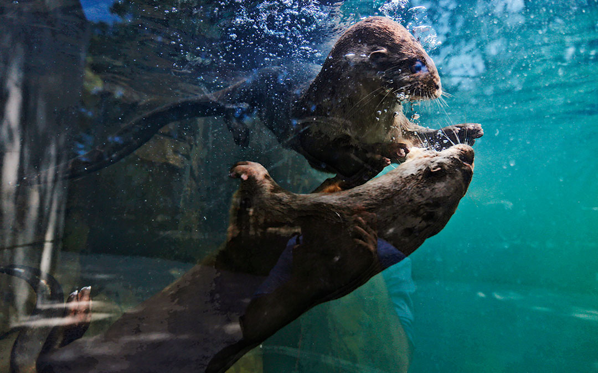

Datos fascinantes sobre las nutrias
-Son súper juguetonas: Las nutrias son conocidas por jugar entre ellas, deslizarse por lodo o nieve, y hasta usar piedritas como juguetes.
-Usan herramientas: Algunas nutrias marinas usan piedras para abrir conchas o mariscos. ¡Son de los pocos animales que usan herramientas!
-Tienen el pelaje más denso del reino animal: Su pelaje puede tener hasta un millón de pelos por centímetro cuadrado, lo que las ayuda a mantenerse calientes en aguas frías.

-Se toman de las manos al dormir:Las nutrias marinas flotan juntas y se agarran de las manos para no separarse. A esto se le llama una "balsa" de nutrias.
-Son expertas nadadoras:Tienen patas palmeadas, cuerpos aerodinámicos y pueden aguantar la respiración hasta 8 minutos bajo el agua.
-Tienen glándulas olorosas:Aunque se ven adorables, las nutrias pueden marcar su territorio con un olor fuerte usando glándulas situadas cerca de la cola.
-Tienen una dieta variada:Comen peces, crustáceos, ranas, y hasta pequeños mamíferos, dependiendo de la especie.
-Son muy familiares:Las nutrias viven en grupos familiares y cuidan mucho a sus crías, enseñándoles a nadar y cazar.
-Algunas viven en agua dulce y otras en agua salada:Hay nutrias de río y nutrias marinas, y su comportamiento puede ser muy diferente.
|  |  |
|  |  |
|  |  |